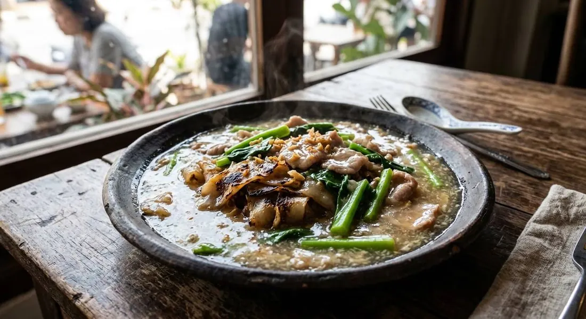

Wide rice noodles charred at the edges, drowned at the last second in a silky pork gravy — the wok dish built on the fight between crisp and smooth.

ราดหน้า means "pour on top" — the name is the method. But Chef Net's technique piece at Krua.co puts the real priority first: "I choose my rad na by the noodles" — เส้นคั่ว, noodles charred in a wok until some strands scorch, or เส้นทอดกรอบ, noodles dredged and deep-fried to a cracker. Both exist to stand up to the gravy, and both are the reason the dish has two schools.
The gravy is the Chinese-Thai engine: garlic and tao jiao, fermented soybean paste fried to fragrance, marinated pork stirred through, stock poured in, then tapioca starch whisked to a gloss. The Khaosod source's marinade does the velvet trick properly — starch, a little water, and baking soda, kneaded and rested at least half an hour, so the pork comes out soft instead of stringy. The kana goes in at the end, two stirs only, so the stems stay crisp against the soft gravy.
And the essential flavour note is the black pepper. Wongnai's home version seasons with white soy and pepper at the finish; the trueid source's gravy leans on the stock and tao jiao. Without the pepper, the dish slides into blandness — with it, the gravy has a proper Chinese-restaurant bite.
| Thai | English | Amount |
|---|---|---|
| เนื้อหมูสันใน | Pork loin, sliced | 200 g |
| แป้งมัน | Tapioca starch | 1 tbsp (+1 tbsp for slurry) |
| เบกกิ้งโซดา | Baking soda | 1 tsp |
| ซีอิ๊วขาว | White soy sauce | 1 tsp (+ to season) |
| ซอสปรุงรส | Seasoning sauce | 1 tsp |
| ซีอิ๊วดำ | Dark soy sauce | 1 tsp |
| น้ำมันหอย | Oyster sauce | 1 tbsp |
| พริกไทยป่น | Ground pepper | 1 tsp |
| น้ำมันพืช | Vegetable oil | 2 tbsp |
| กระเทียมสับ | Chopped garlic | 1 tbsp |
| เต้าเจี้ยว | Tao jiao (fermented soybean paste) | 1 tbsp |
| น้ำซุป | Stock | 500 ml |
| คะน้า | Chinese broccoli (kana) | 300 g |
| เส้นใหญ่ | Fresh wide rice noodles | 300 g |
For the slurry: 1 tbsp tapioca starch + 1 tbsp coconut sugar dissolved in water (Khaosod). Wongnai's shop-style extras: one egg cracked into the charring noodles, and blanched straw mushrooms in the gravy.
The noodles. Wongnai chars sen yai with an egg and dark soy (เส้นคั่ว). Khaosod dredges them in crispy flour and deep-fries them (เส้นทอดกรอบ, Hong Kong style). TrueID assumes soft noodles straight from the steamer. Chef Net says the noodle choice is the whole dish.
Sweet or savoury gravy. Khaosod's slurry carries coconut sugar; Wongnai adds 2 tsp sugar to the gravy itself; Chef Net's Hong Kong rad na is deliberately less sweet than the Thai version.
Mushrooms. Wongnai's shop version adds blanched straw mushrooms; TrueID and Khaosod skip them. They add texture; the classic stands without them.
The soda question. Khaosod's marinade uses baking soda for velvet pork. TrueID's simpler marinade doesn't. Both work; soda is the shop trick for softness.
Egg in the noodles. Wongnai cracks an egg into the charring noodles; the others don't mention it. It's a regional shop habit, not a rule.
This recipe is translated from the following Thai-language sources. Where they disagree, we've said so.
1. TrueID — "แจกสูตร ราดหน้า หมูนุ่ม พร้อมสูตรหมักหมู ผักกรอบ" (the recipe used here, 3–4 servings) — food.trueid.net
2. Khaosod Sentangsedtee — "แจกสูตร ราดหน้าเส้นกรอบหมูหมัก สุดนุ่ม" (crisp-noodle version + baking-soda marinade) — khaosod.co.th
3. Wongnai (Ray, 96.2K reads) — "ราดหน้าเส้นใหญ่หมู" (shop-style: egg in noodles, straw mushrooms) — wongnai.com
4. Krua.co (Chef Net) — "เส้นคั่วและเส้นทอด หัวใจสำคัญของราดหน้า" (the noodle technique essay) — krua.co